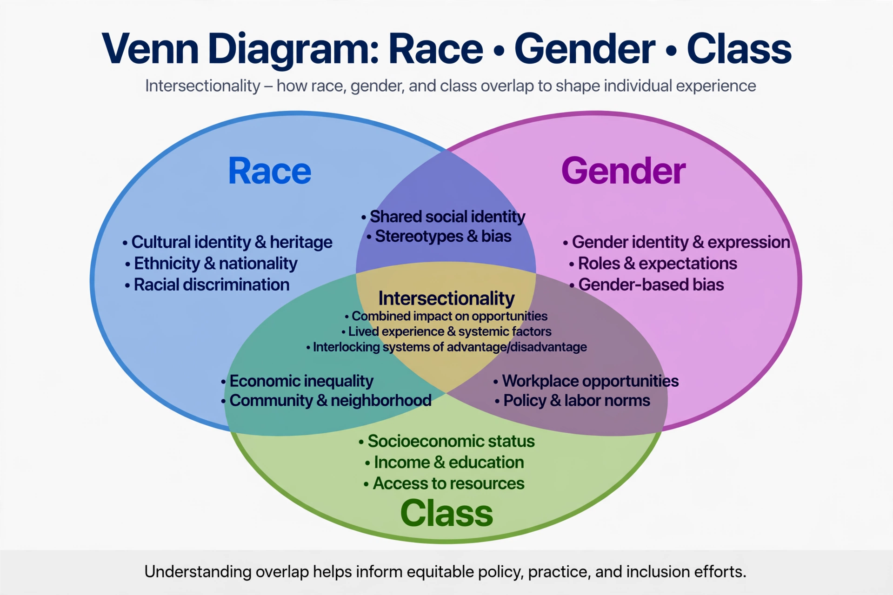

Intersectionality is an analytical framework for understanding how a person's social and political identities — such as gender, race, class, sexuality, disability, and age — combine to create distinct experiences of discrimination and privilege. The framework holds that systems of advantage and disadvantage are interdependent and cannot be fully understood in isolation from one another.
The term was coined in 1989 by legal scholar Kimberlé Crenshaw, who used it to describe how anti-discrimination law, feminist theory, and anti-racist politics each tended to treat gender and race as mutually exclusive categories, leaving Black women's experiences of discrimination unaddressed. Crenshaw illustrated the problem with cases such as DeGraffenreid v. General Motors (1976), in which a court rejected a claim combining race and sex discrimination. Related ideas had earlier been developed in Black feminist thought, including the Combahee River Collective statement (1977) and the work of scholars such as Patricia Hill Collins.
Intersectionality is used in sociology, legal studies, public policy, and activism, including campaigns for gender equality that examine how policy effects differ across groups of women. Proponents argue it produces more accurate accounts of inequality; applications range from health disparities research to employment law.
The concept has become influential in academia and public discourse. Critics argue that it can be difficult to operationalise empirically, that its popular usage sometimes departs from Crenshaw's legal focus, or that it encourages seeing individuals primarily through group identities. Supporters respond that intersectionality is an analytical lens rather than an identity doctrine and note Crenshaw's own defences of the framework.
See also: Kimberlé Crenshaw · Feminism · Critical race theory